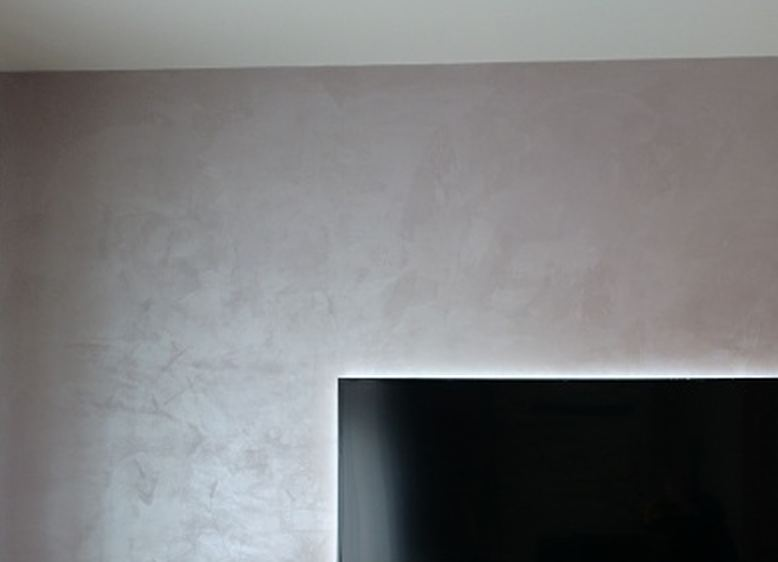
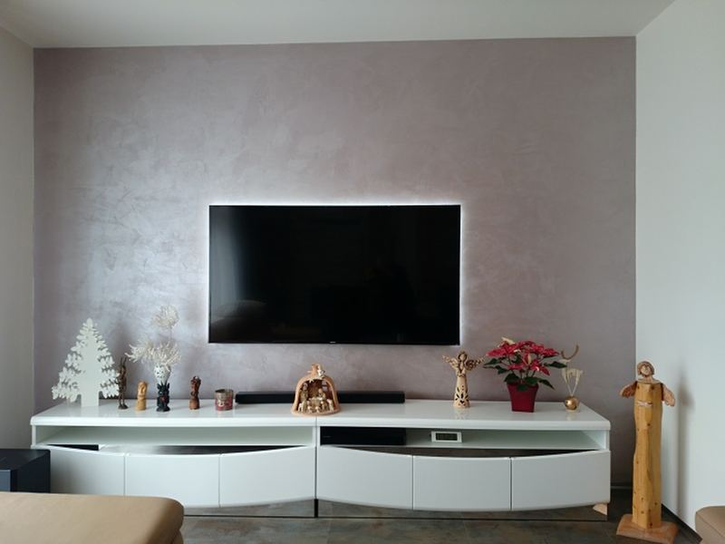
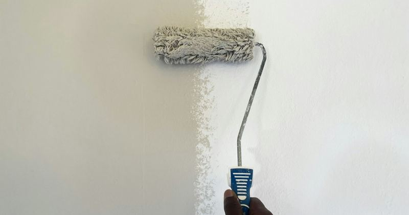
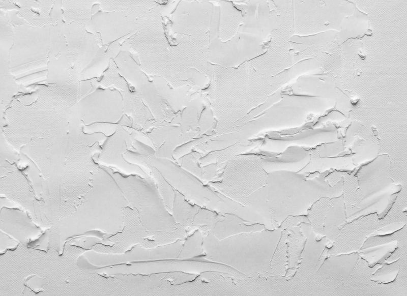
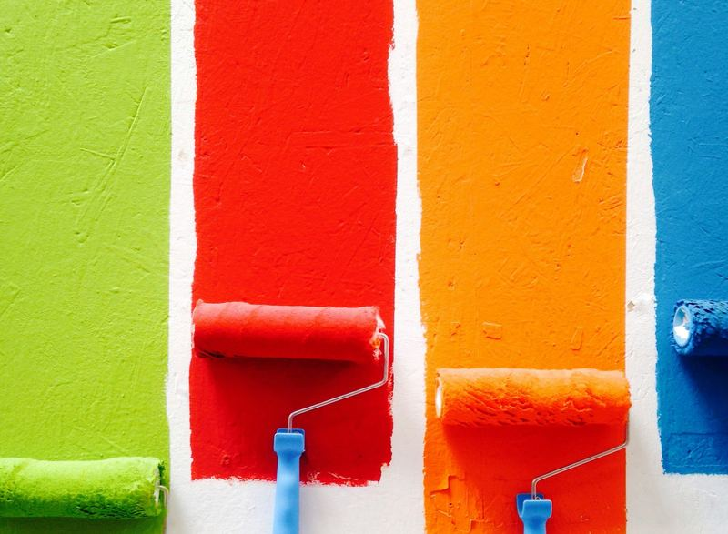

Dekorační techniky OIKOS
Stěrky a struktury, které dají stěně hloubku. Na dotek i na pohled jiné než obyčejná malba.

Profis studio, Ing. Lubomír Fuňák z Příboru. Malby, nátěry, lakování a tapetování, dekorační techniky OIKOS a foliování. Navrhnu barvy a spočítám rozpočet.
Malířem od roku 1992
Vyberte techniku a barvu. Váleček přejede stěnu a uvidíte, jak by pokoj mohl vypadat. Návrh mi pak pošlete s poptávkou.
OIKOS stěrka, starorůžová
Poptat tuto stěnu
Stěrky a struktury, které dají stěně hloubku. Na dotek i na pohled jiné než obyčejná malba.

Malování bytů, domů i kanceláří, nátěry a lakování.

Tapetování stěn a foliování, třeba dveří nebo kuchyňských dvířek.

Navrhnu barevné řešení celého interiéru, aby k sobě pokoje ladily.